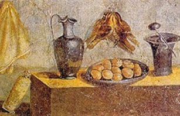
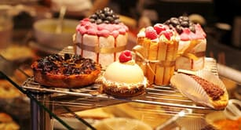

Inicialmente
Su historia se remonta a la Roma Antigua, desde esa época existía el oficio de pastillariorum, así llamaban a los encargados de preparar los pasteles que eran ofrecidos a los dioses, siendo sus ingredientes principales Harina, huevo, miel y quesos frescos.
Con el pasar del tiempo, los artesanos fueron perfeccionando las técnicas de horneo, basándose en ingredientes naturales y recetas tradicionales para mantener su pureza.
Se dice que los soldados romanos fueron los primeros en consumir pan tostado

Hasta que...
Llegó el oscurantismo de la edad media, ésta obstaculizó la evolución de la pastelería italiana en el tiempo, lo cual a su vez la mantuvo tradicional y artesanal pero sin mucha ejecución de la misma.
El rescate de ella se le atribuye a monjes y monjas de conventos y monasterios, estos basándose en las antiguas recetas ya existentes comenzaron a vender pasteles al público a través de pequeñas ventanas.
Ya para el siglo XVII las monjas de Nápoles eran famosas por sus dulces y cada convento tenía su especialidad.
Finalmente
Tal fue el éxito de la pastelería italiana que su producción se vio intensificada en días especiales y festivos, es por ello que en Italia cada día especial o festivo tiene un postre en particular.
Con el tiempo, los postres italianos más famosos de las monjas se pasaron a los panaderos seculares. De ahí, la expansión de la pastelería italiana se dio a nivel internacional. Gracias a ello, hoy podemos disfrutar de las deliciosas preparaciones de repostería italiana.
